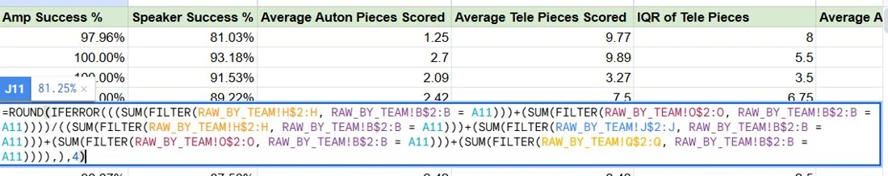

Scouting and strategy system
| Team | FIRST Robotics Competition, Team 1771 |
|---|---|
| Role | Strategy lead, team and alliance captain, driver |
| Dates | August 2022 – May 2026 |
I built Team 1771's strategy department from nothing: the collection tools, the analytics backend, the people trained to run it, and the calls made from its output during matches. Its head-to-head predictor outperformed the standardised FRC match predictor used globally.
Collection
I built seven JotForm collection tools for the 2024 season (three qualitative, four quantitative), eight for 2025 and eleven for 2026, then trained more than 80 team members to run them live at competition. Every submission fed a Google Sheets backend split into a raw layer and a processed layer, so a scout's mistake during a match could never overwrite analysed data.
Analysis

On top of the raw data I built a head-to-head match predictor that outperformed the standardised FRC predictor used globally, a Top 75 tool that ranked every team in our division by success rate, interquartile range and maximums, and auton-by-match and auton-by-team tools that pulled autonomous routine data by driver station.
This system drove alliance selection and match strategy at every event from 2023 onward, including three consecutive state championships from 2024 to 2026 and the Curie Division championship at the 2025 World Championship.
Teaching it
A system nobody can run is not a system. I started and led the team's strategy education department, teaching over 200 students across three years: what FIRST Robotics is, match strategy and game theory basics, techniques for navigating competition rankings, data analysis methods, and how the hardware and software of a robot are driven by the game theory decisions you make. I also ran mentoring sessions for our elementary and middle school teams, robot showcases at county meetings and local science fairs, and STEM nights in the community.
What I would change
I delegated too late. For the first two seasons I ran nearly all of the analysis myself during events, which capped how much we could process and meant the system stopped if I was driving. Building a five-person specialised scouting team fixed it, and I should have done it a year earlier than I did.